Official writeup written on: November 2, 2025
A security researcher known as "KaelenSys" from madrid, discovered a critical vulnerability but only left cryptic clues across platforms.
Note: OSINT is a very large field with lots to explore. The challenge I've shown here, and the way I solve it, are just a small part of what you can do. There are many tools, techniques, and tricks out there that you can learn. If you want to go further and really understand OSINT, I recommend reading this blog post by Petro Cherkasets, which gives a clear and easy-to-follow overview of the field. It's a great starting point for anyone who wants to learn more.
Alright, let me walk you through exactly how I solved this challenge!. Here's my step-by-step solution:
What I extracted from the challenge:
First thing I did was try the obvious - Google and DuckDuckGo searches. As expected with CTF challenges, I got absolutely nothing:
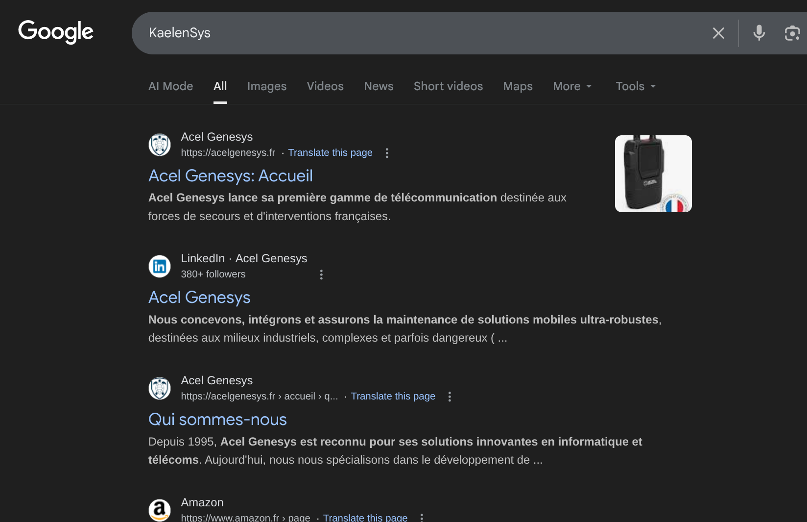
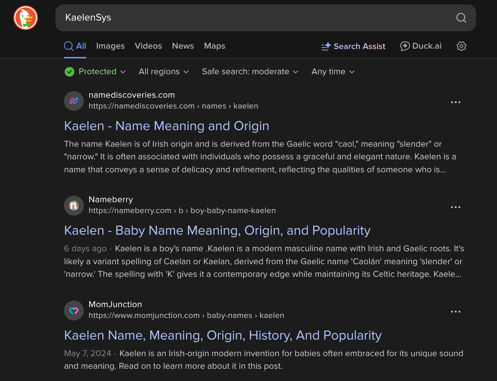
Next step was social media. When search engines fail, this is usually where you find something:
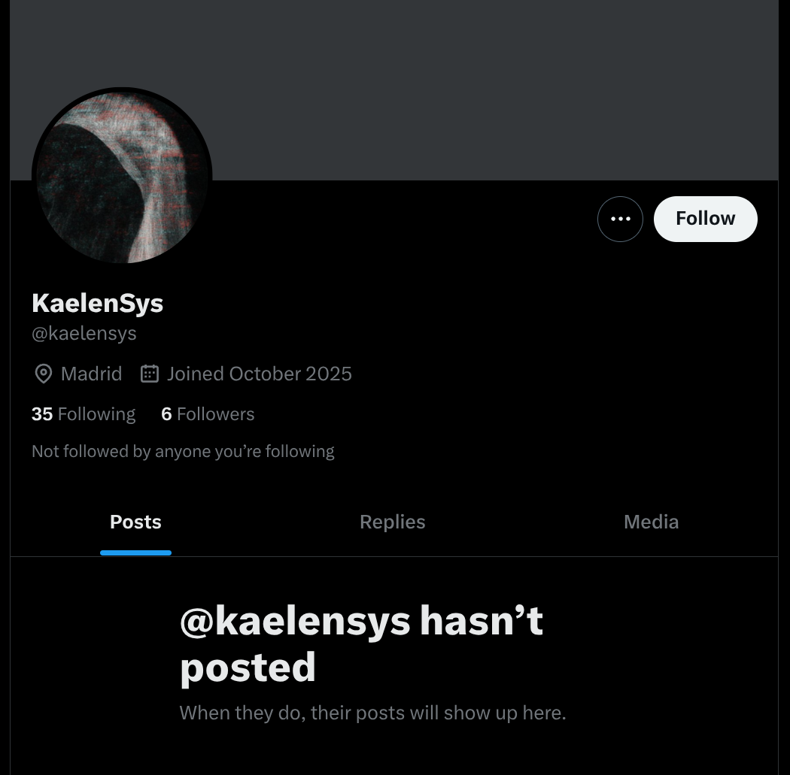
The account looked suspicious:
This seemed worth investigating further.
I decided to manually check all 35 accounts this person was following. Yeah, it was tedious, but OSINT requires patience! Most were legitimate cybersecurity professionals, but one caught my eye:
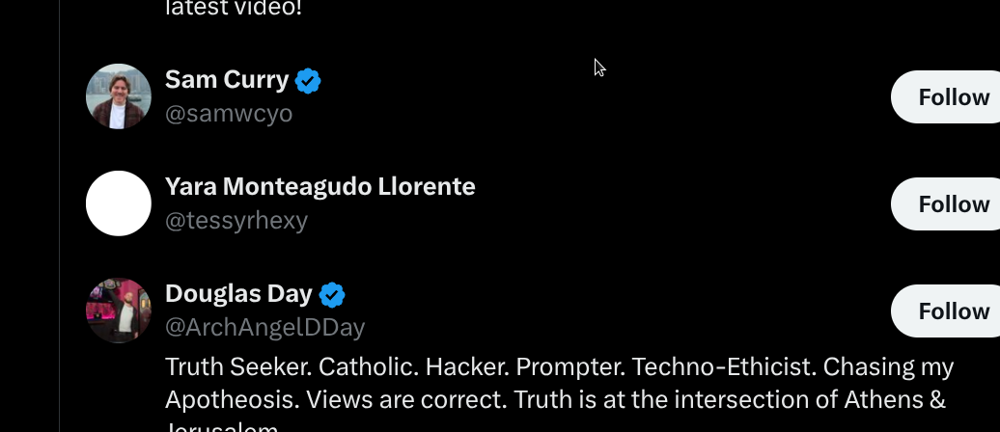
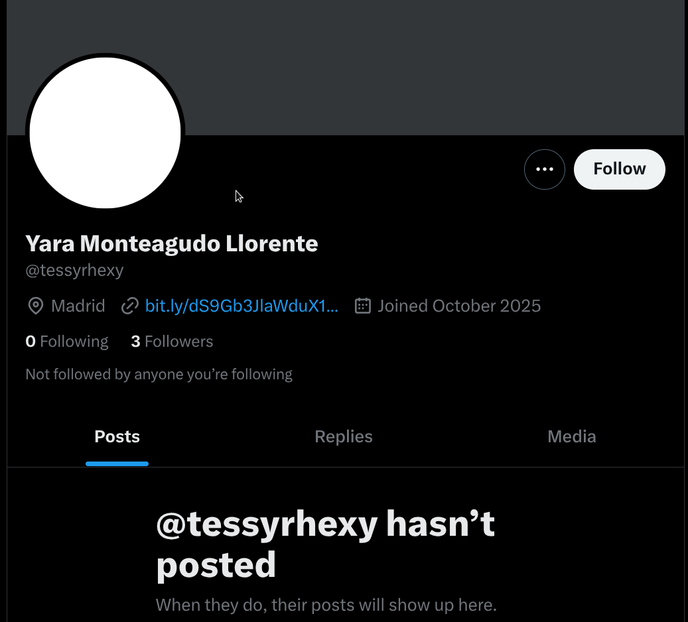
This suspicious account had something interesting:
Notice how the link was truncated? That was my first hint that I'd need to dig deeper into the source code later.
I clicked that bit.ly link and it took me to:
Wait, that domain name looked suspicious! The subdomain "ds9gb3jlawdux1jlc29ydf81mjq3" looked like it could be Base64. I tried decoding it:
The decoding didn't give me anything useful - just corrupted data. So I continued investigating the actual website.
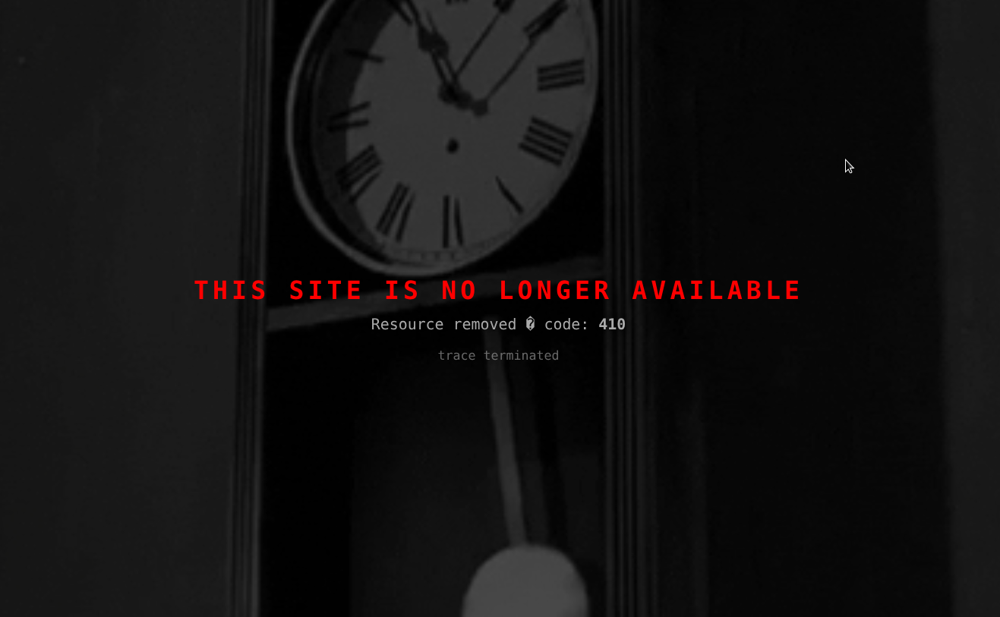
The page said "website deleted" but I wasn't giving up that easily! I checked the source code and found hidden content:
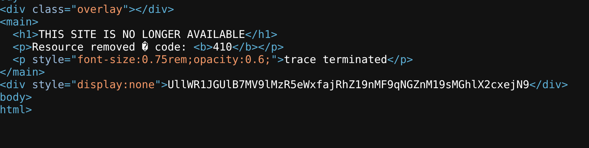
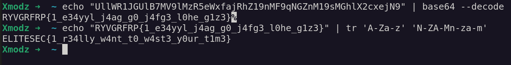
I decoded the Base64:
This looked like a flag but was gibberish. I tried ROT13 and got:
But I noticed something else - that animated clock on the page was giving me major Wayback Machine vibes:
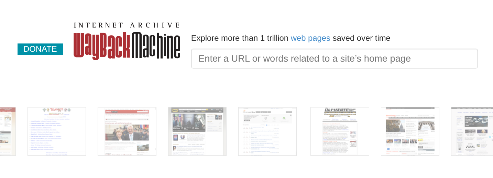
The Wayback Machine is a digital archive of the web, created and maintained by the Internet Archive. Think of it as a time machine for websites, it allows you to see what a website looked like in the past.
The clock animation was clearly hinting at the Wayback Machine, so I checked web.archive.org and found 2 snapshots saved 3 days ago:
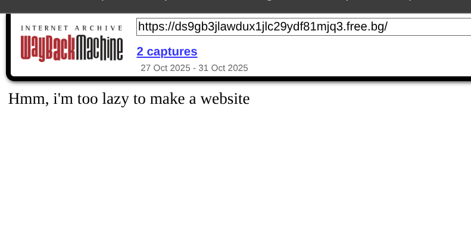
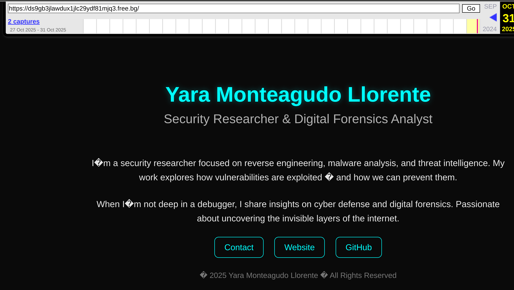
The second snapshot showed a GitHub account. At first look it seemed empty, but this gave me a crucial clue - I could see the real identity: Yara Monteagudo Llorente. This made perfect sense because he's from Madrid (matching our target location) and is also a security researcher (matching the challenge description). So now I understood that KaelenSys is actually Yara Monteagudo Llorente. But the first snapshot... that's where things got interesting.
Going back to the first snapshot, I was stuck. The page seemed normal, but I knew there had to be more. That's when I remembered a key OSINT principle: always check the small details that others might overlook.
Then I remembered there was a hint provided: "any website has a logo, but where? not right now". This hint was telling me that while websites have logos, this particular logo/favicon wasn't available "right now" (in the current version), but it existed before - meaning I should check previous versions!
I thought about what files are commonly present on websites but rarely checked by casual investigators. The favicon! Most people ignore it, but it's a perfect place to hide data. So I decided to check the favicon of the real site and noticed something interesting - when comparing the 2 snapshots, the favicon only existed in the first snapshot, not the second. This seemed suspicious, so I decided to check the favicon.ico file from the first snapshot:
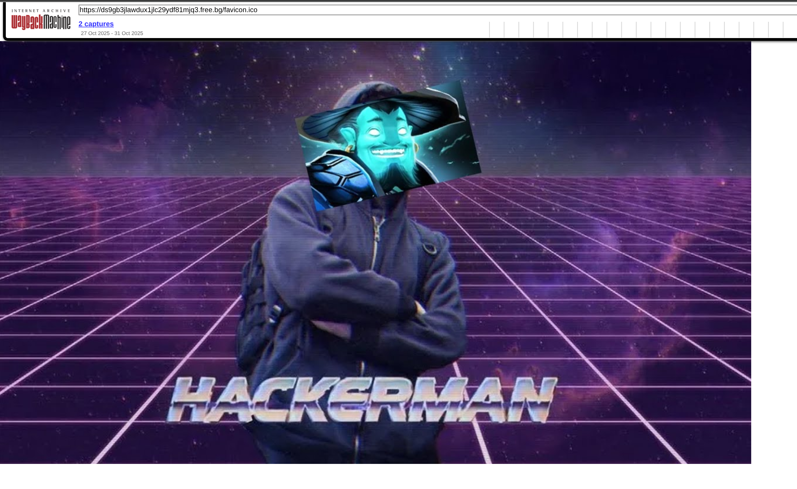
In OSINT investigations, data is often hidden in image metadata, so I checked the favicon with ExifTool:
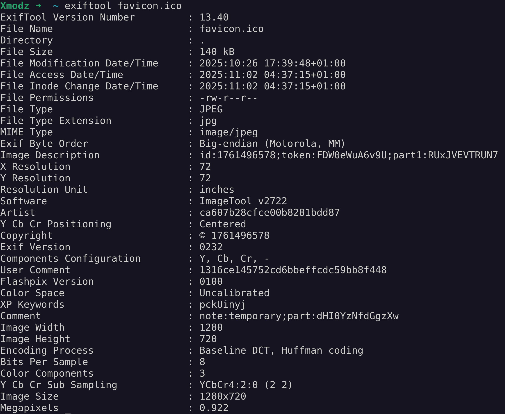
Found some encoded Base64 texts and hex in the metadata:
All the encoded data I found:
But only 2 of them decoded successfully:
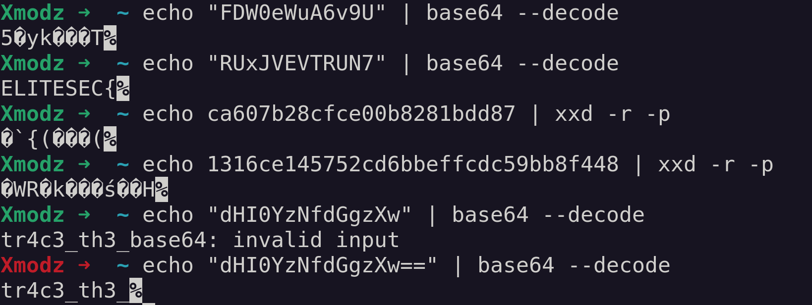
Progress so far:
I was getting somewhere, but I still needed the ending!
Remember that truncated bit.ly link from step 3? I noticed it had some capital letters that looked promising:
Since I couldn't see the full URL, I went back to the Twitter page and checked the source code to get the complete link:
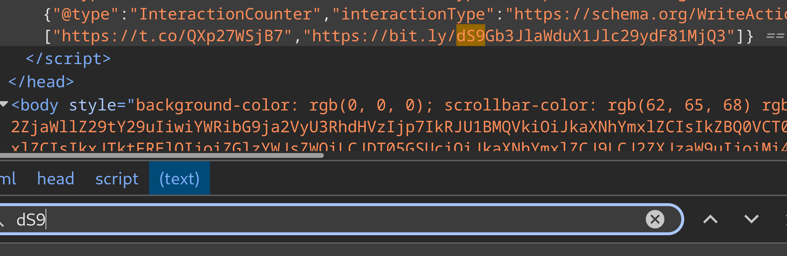
Now I could decode the full path part:
This looks like a Reddit username, so I checked Reddit next.
I searched Reddit for u/Foreign_Resort_5247 and found they had posted in r/cybersecurity, but the post was deleted.
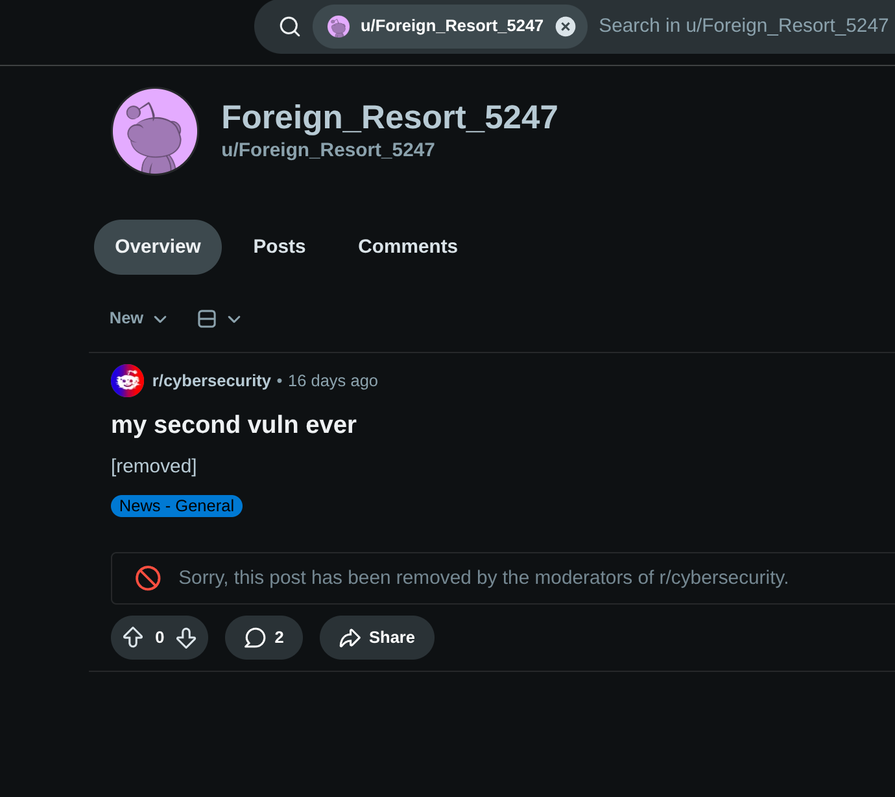
Looking at the comments:
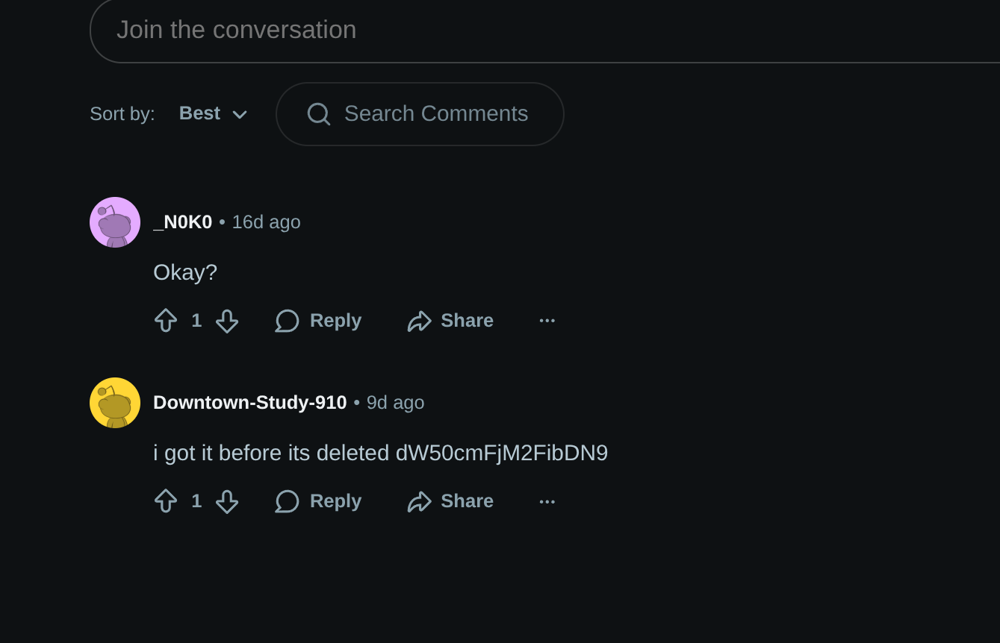
More Base64! I decoded it:
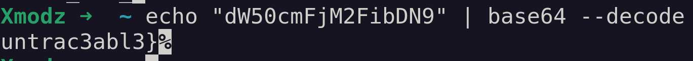
THAT'S THE MISSING PIECE!
Finally! I had all the pieces of the flag: